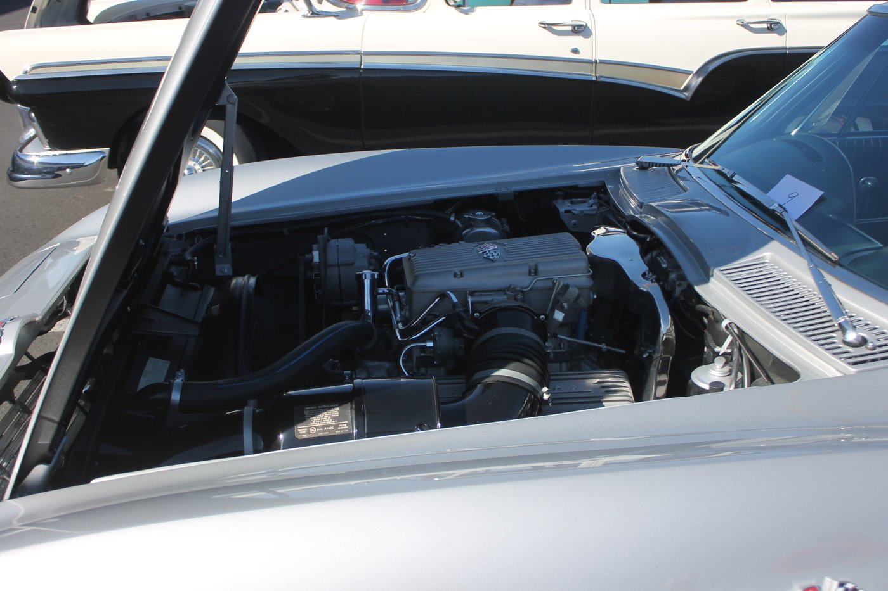
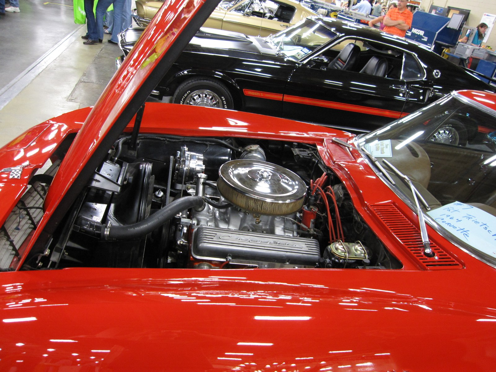
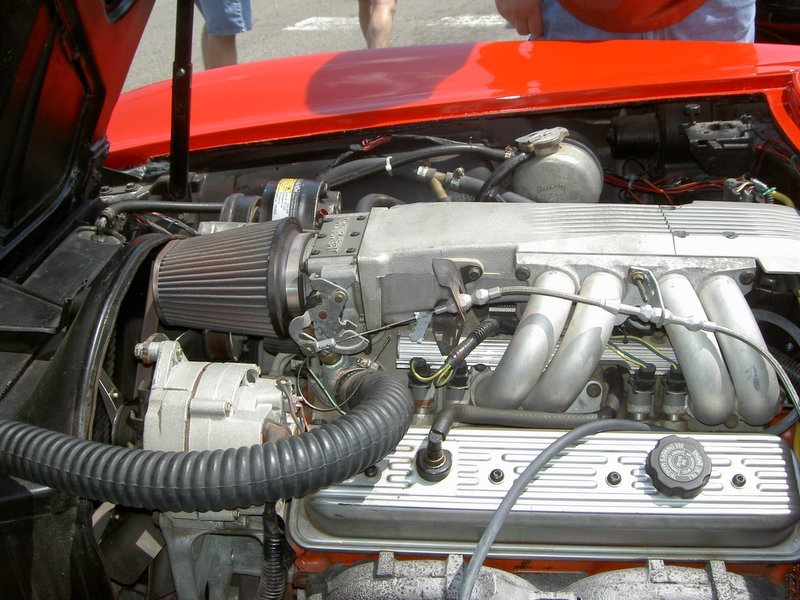

Foto 1 · Draufsicht Front
Der ganze Motorraum auf einen Blick.
Blick von vorne in den offenen Motorraum eines C2 mit 327er Small-Block. Zeigt Layout: Motor mittig, Chrome-Ventildeckel links + rechts, Lichtmaschine unten links, Bremskreis rechts an der Spritzwand.

C2 Corvette Motorraum · Wikimedia Commons
1
Ventildeckel R (Right-Hand Valve Cover)Der ribbedchromdeckel oben rechts. Darunter: Kipphebel + Ventilfedern. Bei deinem L76 hat der Corvette-Schriftzug drauf. Ölfilter-Deckel oben drauf: dort wird Motoröl nachgefüllt.
2
Luftfilter (Air Cleaner)Der große schwarz-chrome Rundtopf oben in der Mitte. Filtert die Ansaugluft, sitzt direkt auf dem Holley 4-Barrel Vergaser.
3
Lichtmaschine (Alternator)Silberzylinder unten links, vorne am Motor. Erzeugt 12 V Bordstrom, lädt die Batterie. Vom Keilriemen der Kurbelwelle angetrieben.
4
Kühlerschlauch oben (Upper Radiator Hose)Dicker schwarzer Gummibogen zwischen Motor und Kühler. Heißes Kühlmittel geht hier vom Motor in den Kühler zum Abkühlen.
5
Motorhauben-StützstangeDer silberne Stab links, hält die 40kg Fiberglas-Haube offen. Bei Wartung immer korrekt einrasten!
6
Innenkotflügel / FenderwellDas schwarze Blech zwischen Motor und Karosserie-Außenwand. Trennt Motorraum vom Radhaus.
7
Hauptbremszylinder + BremskraftverstärkerZylinder-Cluster rechts an der Spritzwand. Wandelt Pedalkraft in Bremsdruck. Bei einem 60 Jahre alten Auto ein Wartungs-Kernteil.
8
Vergaser / Ansaugkrümmer (unter Luftfilter)Wenn du den Luftfilter abhebst, siehst du hier den Holley 4-Barrel-Vergaser oben auf dem Aluminium-Ansaugkrümmer. Herz der Kraftstoff-Aufbereitung.
Foto 2 · Detail Beifahrerseite
Zündanlage und Bremskreis, aus der Nähe.
Blick von der Beifahrerseite (rechte Seite des Motors) auf den 1964 L76. Hier sitzen Zündspule, Zündkabel und der Bremskreis dicht beieinander.

1964 Chevrolet Corvette Motorraum · Wikimedia Commons
1
LuftfilterDer Chromtopf. Nimm den ab, um an Vergaser und Kerzen zu kommen.
2
Ventildeckel „Corvette"Der ribbed Chromdeckel mit dem chromgeschriebenen Corvette-Schriftzug. Konzern-korrekt für die Sport-Motorenversionen 1963-1965.
3
Zündspule (Ignition Coil)Der schwarz-rote aufrechte Zylinder. 12 V → 20.000 V für die Zündkerzen. Häufiges Ausfallteil bei Klassikern.
4
Zündkabel (Spark Plug Wires)Die roten dicken Kabel. Führen Hochspannung von der Spule über den Verteiler zu den 8 Kerzen.
5
Hauptbremszylinder + BremskraftverstärkerDer goldene Domenzylinder rechts an der Spritzwand.
6
Kühlerschlauch obenVerbindet Motor und Kühler oben, führt heißes Kühlmittel zum Abkühlen.
Foto 3 · Detail Fahrerseite
Wo sitzt der Ölmessstab?
Blick von der Fahrerseite (linke Seite des Motors) — hier sitzen Lichtmaschine, Ölmessstab und Auspuffkrümmer eng beieinander. Deine Frage direkt beantwortet: Ölmessstab ist links am Block, mit Griff der nach oben zeigt.
Kleine Einschränkung: Das Foto zeigt einen 1964 Fuelie (L84 mit mechanischer Kraftstoffeinspritzung) statt deinem L76 mit Vergaser. Der silberne runde Kasten oben (Nr. 1) sitzt bei dir nicht drauf — an dessen Stelle hat dein L76 den chromblitzenden Luftfilter (siehe Foto 1 + 2). Alle anderen Teile (Lichtmaschine, Ölmessstab, Ventildeckel, Auspuffkrümmer) sitzen identisch.

1964 Corvette Fuelie (L84) · Wikimedia Commons
1
Kraftstoffeinspritzung (L84 Fuelie)NICHT auf deinem Auto — der silberne Rundkasten war die seltene mechanische Einspritzung. Dein L76 hat statt dessen den chromblitzenden Luftfilter obendrauf (siehe Foto 1+2).
2
Ventildeckel „Corvette" (rechts im Bild)Chromdeckel mit Schriftzug. Ölfilter-Verschluss oben drauf — hier wird Öl nachgefüllt.
3
Lichtmaschine (Alternator)Der silberne Zylinder unten links. Erzeugt Bordstrom, sitzt vorne am Motor. Bei deinem 1964er ist es der Delcotron-Alternator (nicht mehr der ältere Gleichstrom-Generator wie 1962).
4
Ölmessstab (Dipstick) — deine FrageSitzt IMMER an der Fahrerseite des Motorblocks, zwischen Zylinderkopf und Auspuffkrümmer. Kleiner Griff (Loop oder T-Griff) am oberen Ende, langes Metallrohr das nach unten in die Ölwanne führt. Herausziehen → abwischen → wieder reinstecken → herausziehen → Ölstand ablesen. Sollte zwischen „ADD" und „FULL" liegen.
5
Auspuffkrümmer L (Left Exhaust Manifold)Die dunkle geripped Gussmasse unten am Block. Sammelt Abgase aus 4 Zylindern und leitet sie nach unten in die Auspuffanlage. Wird richtig heiß im Betrieb — Vorsicht beim Anfassen nach Fahrt!
6
Zündkerzen-BereichZwischen Ventildeckel und Krümmer stecken die 4 Zündkerzen dieser Zylinderreihe. Kabel gehen vom Verteiler auf jede Kerze einzeln.
Schnelle Handhabungs-Merkzettel
- Öl checken: Ölmessstab (Fahrerseite) ziehen · abwischen · wieder rein · wieder raus · zwischen ADD und FULL.
- Öl nachfüllen: Deckel oben auf dem Ventildeckel (der mit Corvette-Schriftzug).
- Kühlmittel prüfen: Kühlerdeckel vorne am Kühler — NIE bei heißem Motor öffnen, Druck!
- Bremsflüssigkeit: Master-Zylinder-Behälter, rechts an der Spritzwand.
- Batterie: Beifahrerseitig an der Spritzwand — 12 V, negative Masse.